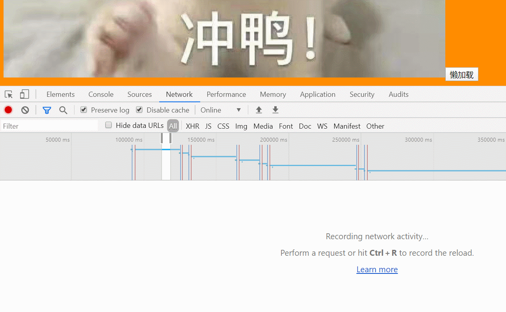
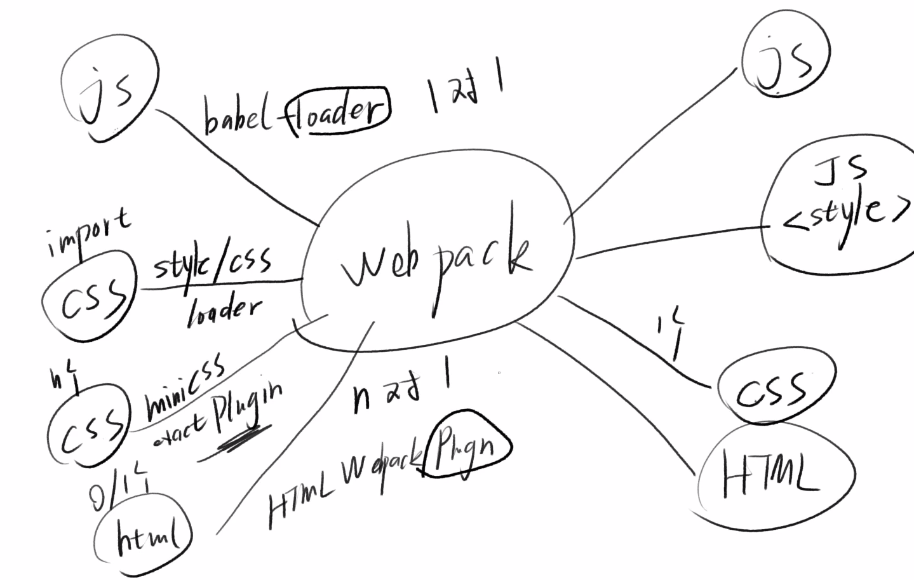

webpack(二)
Target 5 : 用webpack 引入 scss
- https://webpack.js.org/loaders/sass-loader/
- 要点： node-sass已经过时，使用dart-sass
- sass-loader负责把sass编译成css,css-loader负责把css编译成js,style-loader负责把js字符串生成style标签
安装 sass-loader dart-sass
1 | yarn add sass-loader dart-sass webpack --dev |
配置webpack.config.js(注意顺序)
1 | module.exports = { |
Target 6 : 用webpack 引入less 和 stylus
- 经验：sass、less、stylus 完全没区别
安装 less 和 less-loader
1 | yarn add less less-loader --dev |
配置 webpack.config.js
1 | module.exports = { |
安装 stylus stylus-loader
1 | yarn add stylus stylus-loader --dev |
配置 webpack.config.js
1 | module.exports = { |
Target 7 : 用webpack引入图片
安装 file-loader
1 | yarn add file-loader --dev |
配置 webpack.config.js
1 | module.exports = { |
引入图片
1 | import x from './x.js' |
Target 8 : 用webpack使用懒加载
怎么实现一个懒加载
- 用import() 括号里面写加载的文件
- 然后会得到一个promise
- promise.then() 有两个函数，第一个函数写如果执行成功做什么，第二个函数写如果执行失败做什么
Example
- 创建一个 lazy.js文件
1 | export default function lazy(){ |
- 然后在index.js里写：
1 | const div = document.getElementById('app') |
- 如图：

loader VS plugin

- 翻译： loader是加载器，plugin是插件
- webpack-loader：是用来加载文件的，比如说，加载Js文件，将js转译成低版本浏览器可以支持的js文件，也可加载css文件，将css文件加载成页面上的style标签，或者其他的一些处理，也可以用来加载图片，对图片进行一些优化
- webpack-plugin：是用来拓展webpack功能的，比如说 插件 HtmlWebpackPlugin,是用来生成一个html文件的，还有 MiniCssExtractPlugin 是用来抽取css代码，把它变成一个文件的
All articles in this blog are licensed under CC BY-NC-SA 4.0 unless stating additionally.